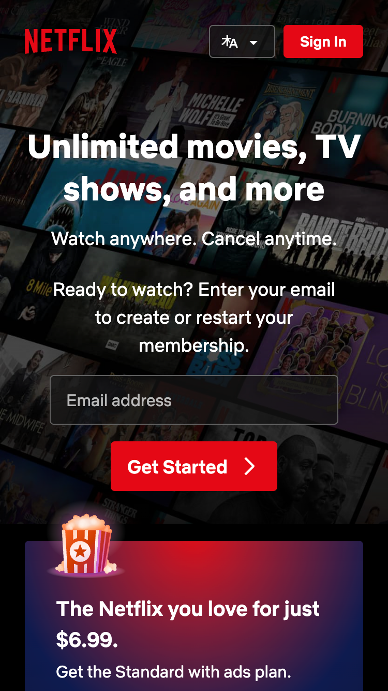
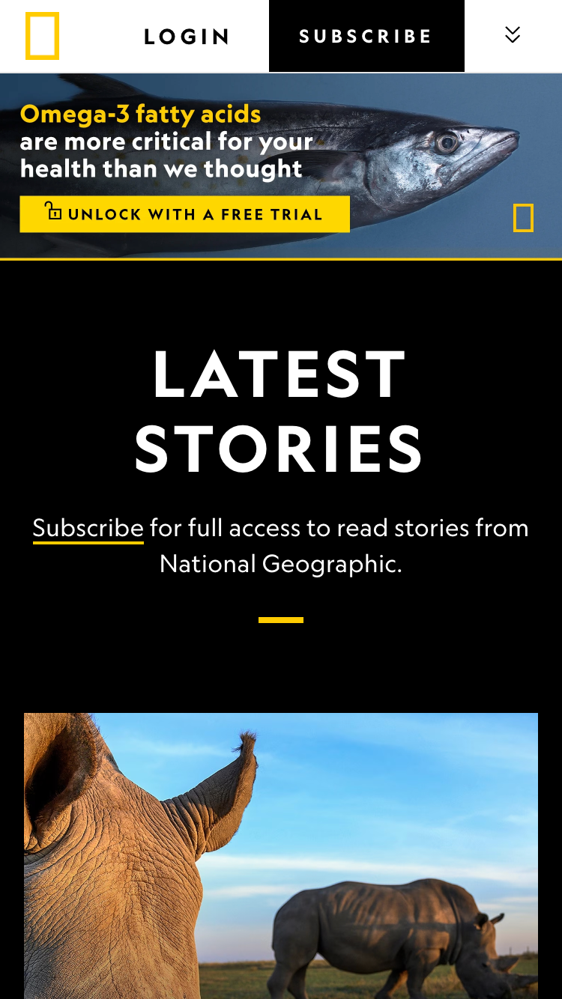

Design Principles Document
Kjirsten Hernandez
Visual Hierarchy
Netflix
netflix.com Netflix has done a great job with keeping with the Z-pattern design in order to help the viewer's eye track across the page in the way that the developers want. Their design follows the natural reading pattern, first by pulling you from left to right across their top banner, then your eyes track to the center of the screen where they have their primary message, and last they move you to the bottom-left where they advertise their most affordable plan. It's visually appealing and gets the viewer to see their important aspects first.
White Space and Clean Design
Even though their initial page has minimal content, Pocket Penguins have drawn users in using their visually appealing use of white space. You solely see their logo, followed by a small example of their product. The white space doesn't seem bland but instead pulls your eye into what they want you to notice the most, prompting the user to scroll further.
PARC: Contrast
National Geographic
nationalgeographic.com The stark contrast in font color and background pulls the viewers attention right to what they want you to read first. The same effect is echoed in their choice of banner image and color palette, making everything easy to see and read on their website.